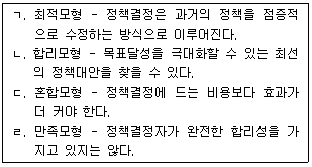

사회복지사-1급(3교시)(구) (2012-02-05 기출문제)
1과목: 사회복지 정책론
1. 사회복지 발달을 18세기 공민권, 19세기 정치권, 20세기 사회권 등 시민권의 확대과정으로 설명한 학자는?
- 마샬(T.H.Marshall)
- 케인즈(J.M.Keynes)
- 스미스(A.Smith)
- 티트머스(R.Titmuss)
- 폴라니(K.Polanyi)
(정답률: 58%)

2. 베버리지(Beveridge) 보고서에 관한 설명으로 옳지 않은 것은?
- 사회보장의 본질을 소득보장으로 보고, 포괄적 보건의료서비스는 사회보장 전제조건의 하나로 보았다.
- 국민최저선 보장을 위해 사회보장에서 공공부조가 가장 중요하다고 보았다.
- 5대악 중 궁핍을 제거하기 위한 것이 사회보장이라고 보았다.
- 완전고용을 사회보장 전제조건의 하나로 보았다.
- 가족수당을 사회보장 전제조건의 하나로 보았다.
(정답률: 41%)
3. 1997년 외환위기 이후의 한국 사회복지제도 변화에 해당하지 않는 것은?
- 국민기초생활보장법 제정
- 노인장기요양보험제도 시행
- 국민건강보험법 제정
- 기초노령연금제도 시행
- 고용보험법 제정
(정답률: 47%)
4. 사회복지정책의 가치에 관한 설명으로 옳은 것은?
- 가치는 사회복지정책의 목표가 아니라 수단이다.
- 비례적 평등 가치를 실현하려면 자원배분 기준이 먼저 정해져야 한다.
- 보험수리원칙은 결과의 평등 가치를 반영한다.
- 열등처우원칙은 수량적 평등 가치를 반영한다.
- 적극적 자유는 타인의 간섭이나 구속으로부터의 자유를 뜻한다.
(정답률: 48%)
5. 정책결정이론에 관한 설명으로 옳은 것을 모두 고른 것은?

- ㄱ, ㄴ, ㄷ
- ㄱ, ㄷ
- ㄴ, ㄹ
- ㄹ
- ㄱ, ㄴ, ㄷ, ㄹ
(정답률: 47%)